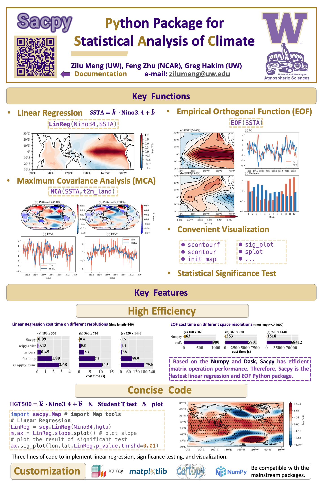

e-mail: zilumeng@uw.edu
Github: https://github.com/ZiluM
Ph.D. Student in Atmospheric Science, University of Washington, 2023 - Now
Supervisor: Greg Hakim & Eric Steig
Research interests: Paleoclimate, Machine learning, Climate dynamics, Data assimilation
B.S. in Atmospheric Science, Nanjing University of Information Science and Technology, 2019 - 2023
Supervisor: Tim Li
Core Courses: Atmospheric (Fluids) dynamics, Atmospheric Physics, Principle of Method Synoptic Meteorology
Deep Learning for tropical pacific reconstruction, developed a deep learning model to reconstruct tropical climate fields.
Sacpy, Built an efficient and useful Statistical Analysis module for Climate data in Python. Over 20000 people have used it so far on Github.
Deep Learning for ENSO, Deep learning and Grad-CAM are used to study the cause of El Nino (La Nina). Over 100,000 people have read articles on Zhihu. Github.
CFR, Participated in developing a universal framework for climate field reconstruction. Github
Meng, Z., & Li, T. (2024). Why is the Pacific meridional mode most pronounced in boreal spring? Climate Dynamics, 62(1), 459–471. https://doi.org/10.1007/s00382-023-06914-4.
Zilu Meng, 2023: SACPY -- A Python Package for Statistical Analysis of Climate. https://doi.org/10.5281/ZENODO.8182410.
Zhu, F., J. Emile-Geay, K. J. Anchukaitis, N. P. McKay, S. Stevenson, and Z. Meng, 2023: A pseudoproxy emulation of the PAGES 2k database using a hierarchy of proxy system models. Sci Data, 10, 624, https://doi.org/10.1038/s41597-023-02489-1.
Meng, Z., Z. Hu, Z. Ai, Y. Zhang, and K. Shan, 2021: Research on Planar Double Compound Pendulum Based on RK-8 Algorithm. Journal on Big Data, 3, 11–20, https://doi.org/10.32604/jbd.2021.015208.
AGU Fall Meeting, San Francisco, CA, USA, 2023 Dec. Title: "Sacpy: Python Package for Statistical Analysis of Climate". Github
